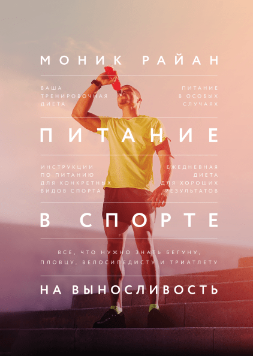
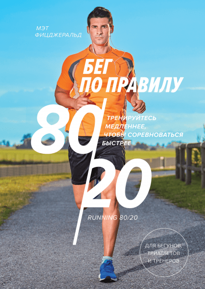
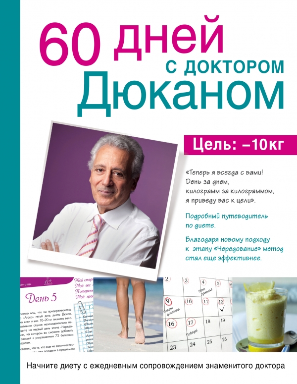

|
В здоровом теле – здоровый дух. Это непреложная истина. К сожалению, о здоровье, и о том, что о нем нужно заботиться, многие вспоминают лишь в тот момент, когда «наваливается» какая-нибудь болезнь. А ведь для того, чтобы держать свой организм в тонусе потребуется уделить ему совсем немного времени каждый день, например, вместо двадцати-тридцати минут за компьютером, сделать гимнастический комплекс, или покрутить педали на велотренажере. Подборка книг о здоровом образе жизни позволит выбрать читателю ту систему или метод, которая подходит ему больше всего, и свести к минимуму риск заболеваний.
Питание в спорте на выносливость

Подробное, научное, доступное и структурированное руководство по спортивному питанию для пловцов, бегунов, велосипедистов и триатлетов.
Книга отвечает на вопросы, связанные с обычным и спортивным питанием, добавками, водой и напитками, витаминами и минералами, тактикой питания до, во время и после тренировок и соревнований.
Бег по правилу 80/20

Бег по правилу 80/20 — это подход к тренировочному процессу, который кратко можно описать так: 80 процентов тренировочного времени нужно бегать с легкой интенсивностью, а оставшиеся 20 — со средней и высокой. Мэт Фицджеральд приводит убедительные доказательства того, что такой подход работает, и предлагает практические рекомендации, с помощью которых вы сможете придерживаться правила 80/20 и составлять свое тренировочное расписание.
60 дней с доктором Дюканом

Новая книга доктора Пьера Дюкана обязательна для тех, кто хочет начать диету в сопровождении знаменитого французского диетолога. Вместе с ним вы будете идти к цели: избавиться от 10 килограммов за 60 дней. Это первое издание, которое создано для постоянного сопровождения худеющего. Каждый день, на протяжении двух месяцев, доктор будет поддерживать и направлять вас: давать советы по питанию, составлять списки покупок и варианты простой физической нагрузки, предлагать полезные рецепты и мотивирующие рекомендации для предотвращения срывов и нарушений. С таким наставником терять вес будет гораздо легче и эффективнее, чем самостоятельно продумывая свое меню и упражнения.
|